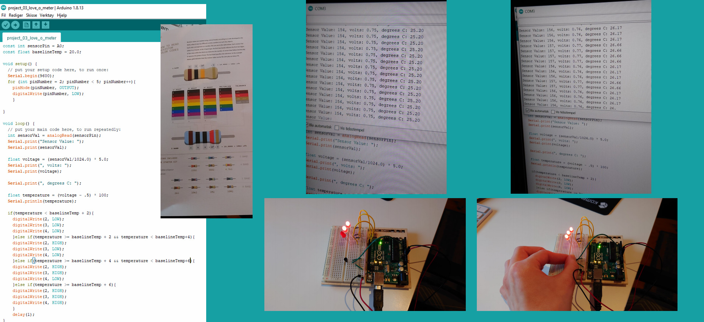

Project 3 - electronics and Arduino
This assignment was to become familiar with basic electronic principles using an Arduino starter kit. I started the assignment with relatively little knowledge about different electronic components or what they do. So, it was natural for me to start at page one of the Ardunio book. The book gives a short, but informative introduction to the various components in the starter kit, during the assignment I had to go back to these pages to reread the information several times to get the right components for the specific project in the book.
Next I started with project one and worked through the book as best I could. I found project 03 – LOVE-O-METER and project 04-COLOR-MIXING-LAMP particularly fun. In this run-through I will give a description of project 03 and how I solved it.
The first step was to lay out all the components I would use. I needed 3 LED lights, 1 TMP36 sensor, 3 220ohm resistors, different sized jumper wires and of course Arduino Uno and a breadboard. During project 2 I noticed that I had different colors on my resistors than the book. So, for this project I knew I had to use different colored resistors than the book to get the wanted 220ohm. Tip: read page 41 in the book to learn how to read the color bands on the resistors correctly. The setup went relatively quick, with the picture in the book as a guide. Then I went through the code and after some missing semicolons and failed syntax I could test it. The sensor read the temperature of my room to be around 25.20 degrees and when I touched the sensor shortly the sensor went up to 26.17
